Se cercavi la classifica dei migliori browser per Windows, macOS e Linux aggiornata al 2025, allora sei nel posto giusto.
Dato che i principali browser sono molto vicini in termini di sicurezza e prestazioni, ho deciso di dare meno importanza ai dati tecnici e di stilare una rapida — ma completa — classifica chiara che tenga conto di più fattori, quali il livello di personalizzazione e l’attenzione alla privacy.
Di seguito anche i pro e i contro di ciascun browser.
Il miglior browser del 2025 per Windows è Mozilla Firefox.
Perché?
Essendo il più veloce nel caricamento delle pagine sia a freddo (cioè alla prima apertura) sia a caldo (caricamenti successivi al primo) e con un occhio attento alla questione privacy, Firefox ha la meglio sui concorrenti. A differenza del più pesante e indiscreto Google Chrome, ha un consumo di risorse RAM e CPU contenuto, incidendo di meno sulla durata della batteria nel caso si usi su un notebook o ultrabook.
Però su Firefox l’integrazione con i servizi Google non è delle migliori; se si visita spesso YouTube, il client web di Gmail o si usa Google Docs, è meglio usare Chrome. Con la sua ampia scelta di estensioni e app, dà sicuramente del filo da torcere a Mozilla Firefox.
Microsoft Edge è imbattibile per la durata della batteria. Essendo il browser nativo di Windows 10, è stato concepito con una serie di ottimizzazioni ad-hoc per cui consuma poca energia e memoria (RAM). Se non si hanno particolari pretese, è il browser ideale. Tuttavia la mancanza di estensioni — ce ne sono davvero poche rispetto a Firefox e Chrome — e l’incompatibilità con alcuni recenti standard lo rendono un browser poco flessibile e non sempre adeguato a visitare tutti i siti.
Opera dispone di un’inedita modalità di risparmio energetico che diminuisce il carico sul dispositivo fino al 50%, prolungando così la durata della carica. Basato su Chromium, è veloce ed altamente personalizzabile. Anche Opera, con la sua VPN built-in gratuita, è molto attento alla privacy. Potrebbe presentare qualche problema di incompatibilità coi siti web meno recenti. Lo considero inadatto per gli utenti meno esperti.
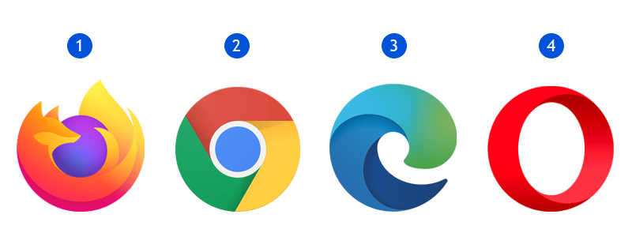Classifica Browser Windows 2025
1) Mozilla Firefox
Pro: veloce e sicuro, attento alla privacy, anti-fingerprinting, altamente personalizzabile.
Contro: non ottimizzato per i prodotti Google.
2) Google Chrome
Pro: veloce e sicuro, ottima integrazione con i prodotti Google, altamente personalizzabile, strumenti di sviluppo eccellenti.
Contro: non sempre protegge l’utente dal tracking e dalle pubblicità.
3) Microsoft Edge
Pro: veloce, leggero, consuma poca batteria.
Contro: poco personalizzabile, non sempre aggiornato.
Safari per macOS è fluido, veloce ed offre un’esperienza di navigazione senza eguali integrandosi perfettamente con il sistema operativo Apple. Consuma poca batteria e risorse, è attento alla privacy e si interfaccia in modo eccellente con il centro notifiche di macOS. È perfetto per la maggior parte degli utenti.
Chrome e Opera sono pressoché equivalenti su macOS a livello di velocità di caricamento e funzionalità, ma anche in questo caso l’integrazione con i prodotti Google è (come ovvio) impeccabile su Chrome. Opera dalla sua ha invece la solita VPN nativa, gratuita ed illimitata. La pecca di entrambi riguarda il consumo di risorse e batteria, non particolarmente ottimizzato se paragonato a Safari.
Mozilla Firefox è particolarmente attento in materia di privacy, con la possibilità di abilitare l’anti-fingerprinting e tanto altro, ed è personalizzabile ai massimi livelli. È più leggero di Chrome e Opera — ma non lo è quanto Safari — e si nota il suo impatto meno gravoso sulla durata della batteria, tuttavia le sue prestazioni non sono eccellenti sui siti web più pesanti.
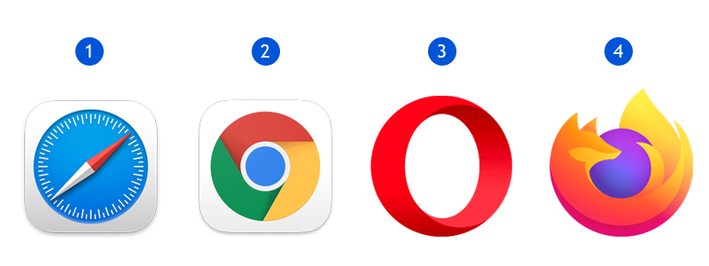Classifica Browser macOS 2025
1) Safari
Pro: veloce e sicuro, leggero, attento alla privacy.
Contro: poco personalizzabile, strumenti di sviluppo quasi inesistenti.
2) Google Chrome
Pro: veloce e sicuro, ottima integrazione con i prodotti Google, altamente personalizzabile, strumenti di sviluppo eccellenti.
Contro: non sempre protegge l’utente dal tracking e dalle pubblicità, consuma molta batteria e risorse.
Contro: incompatibilità con alcuni siti, consuma molta batteria e risorse.
4) Mozilla Firefox
Pro: veloce e sicuro, attento alla privacy, leggero (ma non quanto Safari), altamente personalizzabile.
Contro: lentezza in alcuni casi.
Il miglior browser del 2025 per Linux è Google Chrome.
Perché?
Potrebbe suonare strano, ma Chrome su Linux è la scelta migliore per la maggior parte degli utenti. Veloce e stabile, è anche altamente personalizzabile. Sfortunatamente è poco attento alla questione privacy, inoltre non è in linea con i princìpi FOSS — e potrebbero essere dettagli non da poco per chi usa Linux — però resta comunque molto valido.
Essendo il browser di default in molte distribuzioni Linux, Mozilla Firefox rimane un’ottima alternativa con una solida community alle spalle. A differenza di Chrome, è molto attento alla privacy e sposa perfettamente tutti gli standard open-source. Potrebbe dimostrarsi un po’ lento in fase di avvio in alcuni casi, ma è una pecca trascurabile se si considerano le possibilità di personalizzazione che offre.
Brave è un browser di nuova concezione. Lanciato da Brendan Eich — inventore del linguaggio JavaScript e co-fondatore di Mozilla — è molto interessante in quanto presenta funzionalità di ad-blocking e anti-fingerprinting native. Non è necessaria nessuna estensione, svolge il compito di massimizzare la privacy dell’utente e rimanere anonimi già di suo. È estremamente veloce, ma consuma una discreta quantità di risorse ed energia. Supporta la crittovaluta BAT per remunerare i creatori di contenuti (come blogger e giornalisti) in modo equo e privo di pubblicità. Sembra promettente, no?
Anche su Linux Opera è leggero e veloce ed offre una VPN gratuita con traffico illimitato, ma potrebbe non essere compatibile con alcune pagine web meno recenti. Inoltre viene fornito solo come Deb (64-bit) e RPM.
Classifica Browser Linux 2025
1) Google Chrome
Pro: stabile, veloce, altamente personalizzabile, strumenti di sviluppo eccellenti.
Contro: poco attento alla privacy, non in linea con gli standard open-source / FOSS (ma per quello c’è Chromium).
2) Mozilla Firefox
Pro: veloce e sicuro, attento alla privacy, vicino al mondo Linux.
Contro: in alcuni casi è un po’ lento all’avvio.
3) Brave
Pro: veloce e sicuro, molto attento alla privacy grazie a funzionalità native di ad-blocking e anti-fingerprinting.
Contro: consuma una notevole quantità di risorse e batteria.
4) Opera
Pro: veloce, VPN gratuita inclusa.
Contro: incompatibilità con alcuni siti, fornito solo in Deb (64-bit) e RPM.
Siete d’accordo con le classifiche dei migliori browser per Windows, macOS e Linux?
Avete altri browser o esiti diversi da segnalare? Fatemelo sapere nei commenti.
SSD2: Western Digital WDS250G1B0A Blue S-ATA 250 GB (per macOS)
RAM: Crucial CT8G4SFS824A 8 GB DDR4 2400 Mhz
Wi-Fi / Bluetooth: BCM94360CS2 Bluetooth 4.0 Wi-Fi Card + Adattatore da Mini-PCI a M.2 BCM94360CS2 BCM943224PCIEBT2 12+6 Pin
Più simile a questo è il vostro hardware, maggiori saranno le possibilità di successo.
Note, da leggere attentamente
Non mi assumo alcuna responsabilità su possibili danni causati dalle informazioni riportate di seguito. Un uso errato di tali informazioni può provocare danni al vostro computer. Procedete a vostro rischio e pericolo.
La presente guida è stata scritta solo per fini didattici o dimostrativi.
Quando si installa macOS su un computer non Apple può succedere di tutto. Armatevi di tempo e tanta pazienza, se non va tutto liscio al primo tentativo è normale; non vi scoraggiate.
Alcuni dei passaggi indicati di seguito possono essere eseguiti solo da macOS.
Affinché il dual-boot con Windows funzioni, sono necessari due hard disk separati: ogni sistema operativo deve essere installato su un hard disk dedicato.
Le istruzioni qui di seguito sono valide anche se si vuole installare solo macOS senza dual-boot. In questo caso, saltate i passaggi 1), 5) e 6) della guida.
Qui non troverete informazioni dettagliate su come creare le chiavette USB con gli installer dei sistemi operativi, ma su internet ci sono tante guide dedicate. Se siete in difficoltà basta fare una ricerca.
Questa guida è stata testata con macOS Big Sur 11.5.2, Microsoft Windows 10 e OpenCore 0.7.2. Potrebbe funzionare anche con versioni future di macOS, ma in tal caso bisognerà aggiornare OpenCore e alcuni kext all’ultima versione prima di procedere all’installazione.
Usate un cavo DisplayPort per la procedura di installazione. Lo standard HDMI non è supportato nativamente e potrebbero verificarsi problemi durante l’installazione. Sarà tuttavia possibile usare l’interfaccia HDMI in seguito.
Ripristinate le impostazioni del BIOS a quelle iniziali (Load Setup Defaults) e modificate alcune configurazioni come segue:
Advanced > Chipset Configuration > Onboard HD Audio: Enabled
Advanced > USB Configuration > XHCI Hand-off: Enabled
Security > Secure Boot: Disabled
Boot > CSM: Disabled
Create una chiavetta USB con l’installer di Windows 10.
Create una chiavetta USB con l’installer di macOS utilizzando il metodo ‘createinstallmedia‘ da Terminale. In questo caso la chiavetta USB dev’essere formattata in Mac OS Extended (Journaled) con la mappa partizioni GUID.
Usate OpenCore Configurator per montare la partizione EFI della chiavetta con l’installer di macOS (Tools -> Mount EFI poi cliccate su “Mount Partition”, a fianco alla voce della chiavetta USB in questione) quindi decomprimete la cartella “EFI.zip” allegato qui all’interno di questo percorso (partizione EFI). Se avete fatto tutto correttamente, nella chiavetta con l’installer di macOS dovreste avere una partizione chiamata “EFI” con una sola cartella all’interno — sempre chiamata “EFI” — contenente due sottocartelle denominate “BOOT” e “OC”.
NOTA BENE: Il file EFI.zip allegato qui è stato testato con macOS Big Sur 11.5.2. Se state installando una versione diversa di macOS, prima di procedere assicuratevi di aver scaricato e sostituito i kext Lilu.kext, AppleALC.kext e WhateverGreen.kext con la loro versione più recente nella cartella EFI/OC/Kexts.
Installazione
Installate Windows 10 sul primo hard disk.
Installate macOS Big Sur sul secondo hard disk.
Dopo aver installato macOS, non riavviate il computer. Dovreste essere in grado di accedere e utilizzare il sistema operativo subito dopo. Copiate OpenCore Configurator e la cartella compressa EFI.zip sul desktop, quindi scollegate ogni chiavetta o dispositivo USB attualmente connesso al computer. Estraete la cartella EFI.zip e — come anche spiegato sopra — non dimenticatevi di controllare di avere l’ultima versione in uso dei kext Lilu, AppleALC e WhateverGreen.
Aprite OpenCore Configurator e montate la partizione EFI dell’hard disk dove è installato macOS. Sostituite la cartella EFI presente al suo interno con la vostra cartella EFI, come avete già fatto prima nel passaggio di configurazione della chiavetta di installazione di macOS.
Riavviate il computer, recatevi nel BIOS e cambiate l’ordine di boot in modo che la prima partizione di boot sia “macOS EFI Boot Loader”. Non dev’essere impostato su Windows. Salvate e riavviate.
Selezionate Windows come opzione di boot e installate i driver della scheda di rete BCM94360CS2 Wi-Fi e Bluetooth da qui.
Divertitevi!
Se Windows non appare come opzione di boot o riscontrate errori dopo averlo selezionato, sarà necessario effettuare una configurazione aggiuntiva dettagliatamente spiegata qui.
Molti dei software gestionali per piccole e medie imprese oggi in circolazione usano ancora Microsoft Office 2000 Runtime.
Ed ecco che, spesso, ci si imbatte in errori bizzarri che compromettono il corretto funzionamento del programma.
L’errore più comune, che mi è più volte capitato di riscontrare, è:
Impossibile trovare il file C:\Windows\System\System.mdw
Questo problema, che nella maggior parte dei casi riguarda Microsoft Access, può essere causato da aggiornamenti del sistema operativo (è normale, quando si usa software basato su runtime di oltre quindici anni fa).
Vediamo quindi come risolverlo facilmente nei più recenti Windows Vista, Windows 7, Windows 8 e Windows 10.
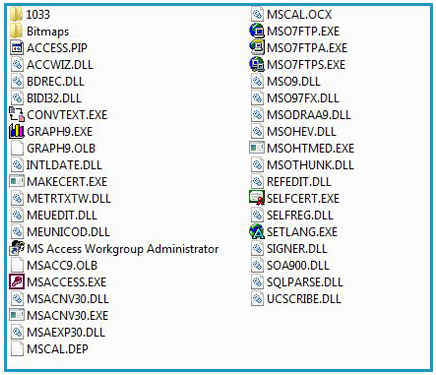
* Seguendo questa guida si accetta di procedere a proprio rischio e pericolo. L'autore della stessa non si riterrà responsabile di eventuali danni o malfunzionamenti al proprio sistema o sito web, hardware o software. *
* Il file indicato di seguito è di proprietà di Microsoft Corporation. È hostato sul presente sito internet solo perché particolarmente difficile da reperire altrove. Tutti i diritti appartengono ai rispettivi proprietari. No copyright infringement intended. *
Innanzi tutto assicuriamoci di aver chiuso tutti i programmi aperti. Quindi:
Scaricate il seguente pacchetto di installazione: a2krtinstall.exe
Apritelo, se possibile estraete il file “a2krtinstall.exe” contenuto al suo interno, quindi eseguitelo.
Terminata l’installazione, riavviate il PC.
Qualora non sia possibile aprire il file “a2krtinstall.exe” e procedere con l’installazione di Access 2000 Runtime, provate ad eseguirlo in modalità di compatibilità per Windows Vista. Se siete proprio su Windows Vista, selezionate “Windows XP SP2″.
Dopo aver riavviato il sistema e riaperto il software che risultava danneggiato, non dovremmo più ottenere quel fastidioso messaggio di errore.
La procedura può essere ripetuta ogni volta che si ripresenta il problema.
Beh, innanzi tutto rilassati e non premere lo schermo con le dita.
Finché l’insetto si muove vuol dire che è vivo, e finché è ancora vivo possiamo fare qualcosa per mandarlo via dal display.
Sembrano un po’ di pixel bruciati, ma poi iniziano a muoversi. Poi si fermano di nuovo e ricominciano.
No, non è una barzelletta: c’è un particolare insetto minuscolo — di cui ignoro il nome e la specie, vi assicuro che è del tutto irrilevante — che si diverte a fare passeggiate all’interno dei nostri schermi LCD.
Specialmente in estate questi inutili animaletti, simili ai moscerini, sono attratti dal calore e dalla luce e quindi spesso fanno pellegrinaggi dentro il monitor del nostro computer. Non fanno distinzione tra desktop, notebook, all-in-one, PC, Mac… A loro va bene qualsiasi sorgente calda e luminosa. Dato che a me questo episodio capita spesso in estate, ed ultimamente è capitato anche ad alcuni miei amici, ho deciso di condividere un metodo molto efficace per liberarcene senza compromettere il display.
* Seguendo questa guida si accetta di procedere a proprio rischio e pericolo. L'autore della stessa non si riterrà responsabile di eventuali danni o malfunzionamenti al proprio sistema, hardware o software. *
Innanzi tutto, vi dico cosa non dovete fare:
Non spingete la superficie del display con le dita. Applicando pressione nell’area nei pressi dell’insetto cercando di deviarlo verso l’esterno, probabilmente lo andrete ad uccidere e rimarrà lì per sempre. Se già l’avete fatto e non si muove più, sperate che ricominci a muoversi nei prossimi giorni. Se dopo quattro-cinque giorni è ancora fermo lì, non c’è altro che si possa fare se non sostituire o far riparare il display dalla casa produttrice.
Non smontate il monitor. Questi insetti sono particolarmente piccoli e sottili, riescono a superare qualsiasi fessura, giuntura o guarnizione e spesso si insidiano nella parte più interna del display. Questo renderebbe inutile ogni nostro intervento di rimozione con la forza, a meno che non abbiamo intenzione di distruggere il monitor con le nostre mani.
Quindi, se l’animaletto è ancora vivo e continua a passeggiare sui nostri cristalli liquidi, procedete in questo modo:
Spegnete immediatamente il display. Se si tratta di un notebook o di un all-in-one, spegnete direttamente il computer. È fondamentale far raffreddare il dispositivo innanzi tutto.
Prendete una torcia e puntatela verso un angolo del monitor (scegliete l’angolo più vicino a dove si trovava l’insetto l’ultima volta che l’avete visto). Cercate di avvicinarla il più possibile, in modo da far surriscaldare lievemente il monitor in quella zona. Rimanete così per alcuni minuti, e ad un certo punto l’insetto dovrebbe uscire. È possibile che esca anche di lato, o dal retro, quindi controllate e sistematelo per le feste non appena esce dal display.
Se siete fortunati, questo semplice procedimento potrebbe salvare il vostro schermo. Se nonostante la torcia non si decide ad uscire, cercate di lasciare il dispositivo spento il più a lungo possibile; non essendoci più luce né calore, prima o poi sarà costretto a migrare altrove. Se dovesse morire all’interno del display e quindi non si muove più per alcuni giorni, vi conviene informarvi se questo caso rientra in garanzia — varia da produttore a produttore, ovviamente sempre entro il secondo anno dalla data di acquisto — oppure valutare se vi conviene convivere con quel puntino nero sul monitor piuttosto che acquistarne uno nuovo.
In questa guida cercherò di condividere con voi le nozioni fondamentali della programmazione in C.
Ci sono centinaia di guide in rete, ma spesso alcune sono esageratamente lunghe. Quindi sarò breve, giusto per darvi un’infarinatura generale; non tratterò i puntatori e le liste, argomenti un po’ più complessi.
A fine pagina trovate anche gli esercizi in C svolti, testati e funzionanti.
* Questa guida dà per scontato che nel vostro computer sia già installato un ambiente di sviluppo (o IDE).
Se non lo avete ancora fatto, date un'occhiata a questo articolo. *
Quindi, cominciamo!
Il C è un linguaggio di programmazione di tipo strutturato, sviluppato nel 1972 da- – Scherzo! La storia non ci interessa.
0. Prerequisiti
Un paio di cose da tenere a mente:
– La funzione principale in un qualsiasi programma è ilmain(). Esso è indispensabile ed unico, cioè deve essere presente una sola volta.
– Alla chiusura del main(), quindi prima della chiusura dell’ultima parentesi graffa, va sempre scritto return 0. Se invece si chiude un void() (ne parlo qualche riga sotto), non è necessario porre il return.
– Il punto e virgola serve per chiudere un’istruzione, quindi dopo quel simbolo inizierà – se presente – l’istruzione successiva.
– Le parentesi graffe servono per delimitare blocchi di istruzioni (o statement).
– Per andare a capo quando si stampa a video (con la printf) si usa il carattere \n .
– Se si vuole stampare a video un carattere con l’accento, è bene scriverlo con l’apostrofo (ad esempio, è va scritto e’).
Ah, un altro semplice concetto che troverete utile più avanti è la differenza tra funzione e procedura. Una funzione è un insieme di istruzioni (cioè routine) che ritorna un valore. Una procedura, invece, è invece una routine che non restituisce alcun valore.
1. Librerie
Per prima cosa bisogna includere le librerie. Serviranno al nostro IDE per interpretare e compilare il programma che andremo a scrivere, quindi senza di esse non funzionerà nulla. Quelle standard sono <stdio.h> e <stdlib.h>, perciò all’inzio della pagina scriviamo:
#include <stdio.h>
#include <stdlib.h>
Se dovremo lavorare con le stringhe, char o array di caratteri, utilizzeremo anche la libreria <string.h>.
Un’altra libreria che troverete negli esercizi svolti è la <time.h>, che serve per generare numeri a caso (random).
2. Variabili
Le variabili sono dei contenitori, identificati da un nome univoco, a cui viene assegnato un valore.
Esse vengono sempre definite da un tipo e da un nome. Esistono diversi tipi di variabili in C:
Tipo
Rappresentazione
Dimensione
Char
Carattere
1 (8 bit)
Int
Numero intero
2 (16 bit)
Short
Numero intero corto
2 (16 bit)
Long
Numero intero lungo
4 (32 bit)
Float
Numero reale
4 (32 bit)
Double
Numero reale lungo
8 (64 bit)
Perciò, per dichiarare una variabile, dovremo scegliere uno dei tipi indicati sopra ed assegnargli un nome. Ad esempio, con:
int a;
int b;
abbiamo appena dichiarato due variabili di tipo intero, chiamate a e b. Ora è necessario inizializzarle, cioè assegnargli un valore:
a = 5;
b = 10;
Quindi in questo caso abbiamo la variabile di tipo intero chiamata a che ha valore 5, e la variabile intera b con valore 10.
La dichiarazione e l’inizializzazione possono avvenire anche contemporaneamente. Infatti, gli esempi precedenti possono essere riassunti in:
int a = 5;
int b = 10;
In base al caso, potremo decidere dove e quando dichiarare le variabili: fuori o dentro al main, ad esempio. Una variabile dichiarata fuori dal main si dice globale, proprio perché può essere usata da più funzioni all’interno dello stesso programma.
Ma non ci soffermiamo su questo punto, dato che non ha fini pratici ed immediati.
3. Operatori
Gli operatori consentono ai vari elementi all’interno di un programma di interagire. Si possono classificare in tre tipi diversi:
Aritmetici
Operazione
Simbolo
Esempio
Addizione
+
2 + 3 = 5
Sottrazione
–
6 – 1 = 5
Moltiplicazione
*
2 * 3 = 6
Divisione (Intera)
/
15 / 3 = 5
Divisione (Con resto)
%
11 / 6 = 5
Confronto
Simbolo
Significato
Utilizzo
==
uguale a
a == b
!=
diverso da
a != b
<
minore
a < b
>
maggiore
a > b
<=
minore o uguale
a <= b
>=
maggiore o uguale
a >= b
Logici
Simbolo
Significato
Utilizzo
&&
e (AND logico)
a && b
||
o (OR logico)
a || b
Un concetto fondamentale su cui bisogna prestare attenzione, per quanto riguarda gli operatori, è che con un uguale = si indica un assegnamento, mentre con due uguali == si effettua un confronto.
Quindi, a = 5 vuol dire che alla variabile a abbiamo assegnato il valore 5.
Invece se scriviamo a == 5, stiamo controllando se la variabile a ha valore 5.
4. Input / Output
printf
L’istruzione tipicamente usata per stampare a video è la printf(), che permette di stabilire cosa stampare ed in quale forma.
La struttura delle printf è la seguente:
printf("testo", argomento/i);
È possibile utilizzare anche delle stringhe di controllo, cioè una sorta di segnaposto. Cambiano in base al tipo di variabile a cui fanno riferimento:
Stringa
Rappresentazione
%d oppure %i
Intero decimale
%f
Virgola mobile
%c
Carattere
%s
Stringa
%o
Ottale
%x oppure %X
Esadecimale
Ma vediamo un esempio pratico.
int a = 5;
printf("Il valore di a e': %d", a);
Come vedete, dopo la virgola si scrive la variabile a cui si riferisce la stringa di controllo. Eseguito il programma, al posto del %d, apparirà 5 (cioè il valore di a).
scanf
L’istruzione per acquisire un valore inserito in input dall’utente e memorizzarlo in una variabile è la scanf(). La sintassi è la stessa della printf(), anche per quanto riguarda le stringhe di controllo. L’unica differenza è sugli argomenti: sarà necessario che la variabile dove vogliamo che il valore venga memorizzato sia preceduta dal simbolo &. Un esempio pratico di printf e scanf all’opera è il seguente:
int i;
scanf("%d \n", &i);
printf("%d \n", i);
La scanfmemorizzerà il valore intero inserito dall’utente all’interno della variabile i, e successivamente la printf lo stamperà a video.
5. Array (o vettori)
Di solito questo nome spaventa tutti. Niente panico! Un array non è altro che una collezione organizzata di oggetti dello stesso tipo. Se immaginiamo un array come una scatola, consideriamo che all’interno di esso potremo inserire solo oggetti simili (o tutti int, o tutti char, ecc.).
Ma cosa si intende per organizzata? Vuol dire che è possibile identificare univocamente tutti gli oggeti dell’array in modo sistematico, cioè con l’uso di indici numerici che, in un array di grandezza N, vanno da 0 ad N-1. Prima che cadiate in depressione, facciamo un esempio pratico:
int vett[10];
Indica che abbiamo dichiarato un array di interi chiamato vett, che ha grandezza 10. Quindi, esso contiene dieci caselle numerate (da 0 a 9), ognuna delle quali include un numero intero.
La prima volta che ho visto un vettore e il relativo funzionamento mi sono chiesto: Ma a che diavolo servono?
Se vi state facendo la stessa domanda, sappiate che troverete la risposta dopo aver fatto qualche esercizio su questo argomento.
Se non ve la siete posta, caspita! Siete Bill Gates o un suo lontano parente.
6. Controlli Condizionali
Nella programmazione, le istruzioni vengono eseguite dalla prima all’ultima. Ma come facciamo se bisogna farne eseguire una piuttosto che un’altra in base al contesto? Basta porre delle condizioni che, se verificate, eseguono un pezzo di codice piuttosto che un altro.
if-else
L’istruzione if permette di verificare le condizioni con la seguente sintassi:
if (condizione) {
istruzione;
}
Se la condizione si verificherà, si passa all’istruzione immediatamente successiva. Al contrario, se la condizione risulta falsa, si salta l’istruzione (o l’insieme di istruzioni) che fanno parte dell’if e si procede nell’esecuzione delle istruzioni successive, che possono essere la prosecuzione del programma, oppure un else, cioè un’istruzione alternativa. Ad esempio:
Si può usare anche l’else if, un costrutto che permette di verificare più di due condizioni diverse:
if (condizione) {
istruzione 1;
} else if {
istruzione 2;
} else {
istruzione 3;
}
Negli esercizi svolti in fondo all’articolo vedremo anche l’if-else in azione.
7. Controlli Iterativi
Ora vediamo i costrutti che permettono di eseguire istruzioni o blocchi di istruzioni in modo ciclico, fino al verificarsi di alcune condizioni. Le istruzioni di ciclo, come le istruzioni condizionali if-else, hanno bisogno che alcune condizioni si verifichino affinché il ciclo continui o si interrompa. Le istruzioni fondamentali di ciclo sono while, do-while e for.
while
La struttura del while è la seguente:
while (condizione) {
istruzione/i;
}
L’istruzione o le istruzioni all’interno del while agiscono sulla condizione che il whileaspetta essere falsa per poter uscire dal ciclo, altrimenti il ciclo non terminerebbe. Ad esempio, per stampare a video una successione di cifre da 0 a 49, si scrive:
int a = 0;
while (a != 50) {
printf("%d ", a);
a++;
}
dove a++ indica l’incremento di 1 che la variabile a subisce finché non si arriva a 50.
do – while
Molto simile al while è il do-while, che ha la seguente sintassi:
do {
istruzione/i;
} while (condizione);
Tenendo conto delle considerazioni fatte per il while, va notato che in questo modo l’istruzione all’interno del do-while viene eseguita almeno una volta, indipendentemente dal fatto che la condizione specificata nel whilerisulti vera o falsa. Ad esempio, per porre una domanda all’utente finché egli non risponde correttamente, scriveremo:
do {
printf("Premere 1 per continuare: ");
scanf("%d", &num);
} while (num !=1);
for
La sintassi del for è la seguente:
for (inizializzazione; condizione; incremento) {
istruzione/i;
}
Il for è esattamente uguale al while, se non fosse che è più conciso ed è solitamente impiegato quando sappiamo a priori il numero di iterazioni che bisogna eseguire. I parametri all’interno del for vanno specificati ogni volta e sono separati da un punto e virgola. Nello specifico:
– Il primo viene eseguito prima di entrare nel ciclo, ed inizializza una variabile. Generalmente la variabile è usata come controllo del ciclo e servirà per tenere traccia del numero di iterazioni. Ricordiamo che questa variabile va dichiarata prima del for ed inizializzata dentro al for. – Il secondo è la condizione, che se risulta falsa interrompe l’esecuzione del ciclo. – Il terzo parametro è l’incremento, che viene eseguito dopo ogni ciclo del for; questa istruzione agisce sulla variabile di controllo incrementandone (o decrementandone) il valore.
Facciamo un esempio con un esercizio che conta da zero a cento.
int i;
for (i=0; i<=100; i++) {
printf("%d", i);
}
Bisogna sapere che gli array e i cicli for vanno a braccetto, per il fatto che un ciclo for permette di contare per un certo numero di volte. In questo modo, utilizzando una variabile che incrementi (o decrementi) il suo valore ad ogni ciclo, è possibile scorrere le posizioni degli array. Per fare un esempio, consideriamo un vettore di interi lungo 100 e di voler stampare a video il suo contenuto; non inizieremo a contare da 1, ma da 0, fino ad arrivare a novantanove (quindi cento elementi). Utilizzeremo il comando di stampa sull’array con l’indice, incrementato ogni volta, preso dal ciclo for. Cioè:
int vett[100];
int i;
for (i=0; i<100; i++) {
printf (“%d”, int_array[i]);
}
Invece, un esempio di codice per riempire un array lungo 10 con numeri interi chiesti in input all’utente, è il seguente:
for (i=0; i<10; i++) {
printf("Inserisci un numero: ");
scanf("%d", &vett[i]);
}
In questo modo verranno chiesti dieci numeri in input e memorizzati nell’array, a partire dalla posizione 0 fino alla 9.
8. Ultime considerazioni
Se ci dovessimo trovare nella situazione di lavorare con gli array di caratteri (char), teniamo a mente che:
1. Ogni cella del vettore corrisponde ad una lettera della parola inserita.
2. Per evitare problemi, è bene assegnare agli array di tipo char una grandezza predefinita. Ad esempio, scrivere
char vett[];
è sbagliato. È preferibile scrivere così:
char vett[10];
3. Se dobbiamo vedere quanto è lunga la parola inserita nell’array, vi consiglio di agire in questo modo:
char vettore[20];
int i, lung;
printf("Inserisci una parola: \n");
scanf("%s", vettore);
lung = strlen(vettore);
for (i=0; i<lung; i++) {
if (condizione) {
istruzione;
}
Il comando strlen, incluso nella libreria <string.h>, misurerà la lunghezza della parola inserita dall’utente. In questo modo si eviterà che il for conteggi anche le caselle vuote.
In questo caso, se l’utente inserisce una parola di 12 caratteri, l’array avrà 12 celle occupate e 8 libere in quanto è di lunghezza 20. Quindi se noi non utilizzassimo lo strlen per misurare il numero di lettere della parola inserita, e ponessimo il for con un generico i < n, verrebbero conteggiate anche le 8 celle vuote e il programma non funzionerebbe a dovere.
9. Esercizi svolti
Finalmente, ci siamo. Qui di seguito trovate esercizi svolti e funzionanti (compilati e testati con l’IDE Eclipse) di vario genere.
Siete liberi di ricopiarli, modificarli, stamparli e buttarli nel cestino, se è quello che vorrete fare.
• Array al Contrario •
Dato un vettore di lunghezza 10, si chiedano i numeri in input all’utente e si ristampino a video prima nell’ordine di inserimento e poi al contrario
/*
* ArrayContrario1.c
*
* Created on: 29/gen/2015
* Author: Fabio Biocchetti
*/
#include<stdio.h>
#include<stdlib.h>
#include<time.h>
int main() {
int vett[10];
int i;
for (i = 0; i < 10; i++) {
printf("Inserisci un numero: ");
scanf("%d", &vett[i]);
}
printf("\nIl vettore e' il seguente: ");
for (i = 0; i < 10; i++) {
printf("%d ", vett[i]);
}
printf("\nIl vettore al contrario e' il seguente: ");
for (i = 9; i >= 0; i--) {
printf("%d ", vett[i]);
}
return 0;
}
• Massimo e minimo di un array •
Si inseriscano in input 10 numeri in un vettore di lunghezza 10. Si stampi il numero più grande e il numero più piccolo di tale vettore.
/*
* ArrayMaxMin1.c
*
* Created on: 29/gen/2015
* Author: Fabio Biocchetti
*/
#include<stdio.h>
#include<stdlib.h>
int main() {
int vett[10];
int i, min;
int max = 0;
for (i = 0; i < 10; i++) {
printf("Inserisci un numero: ");
scanf("%d", &vett[i]);
}
for (i = 0; i < 10; i++) {
if (max < vett[i])
max = vett[i];
}
printf("Il numero piu' grande dell'array e': %d \n", max);
min = max;
for (i = 0; i < 10; i++) {
if (min > vett[i])
min = vett[i];
}
printf("Il numero piu' piccolo dell'array e': %d \n", min);
return 0;
}
• Array pari o dispari •
Si chiedano 10 numeri in input. Verificare se i numeri inseriti sono pari o dispari. Stampa a video prima tutti i dispari, poi tutti i pari.
/*
* ArrayPariDispari.c
*
* Created on: 28/gen/2015
* Author: Fabio Biocchetti
*/
#include<stdio.h>
int main() {
int vett[10];
int i;
for (i = 0; i < 10; i++) {
printf("Inserisci un numero: \n");
scanf("%d", &vett[i]);
}
for (i = 0; i < 10; i++) {
if (vett[i] % 2 != 0) {
printf("Numero dispari: %d \n", vett[i]);
}
}
for (i = 0; i < 10; i++) {
if (vett[i] % 2 == 0) {
printf("Numero pari: %d \n", vett[i]);
}
}
return 0;
}
• Array posizione pari o dispari •
Chiedere in input 10 numeri. Verificare se alla posizione pari c’è un numero pari. Se sì, stampa a video “Pari”. Fare lo stesso con i dispari. Negli altri casi si stampi a video “Non va bene”.
/*
* ArrayPariDispari2.c
*
* Created on: 28/gen/2015
* Author: Fabio Biocchetti
*/
#include<stdio.h>
int main() {
int vett[10];
int i;
for (i = 0; i < 10; i++) {
printf("Inserisci un numero: \n");
scanf("%d", &vett[i]);
}
for (i = 0; i < 10; i++) {
if (i % 2 == 0 && vett[i] % 2 == 0) {
printf("Pari \n");
} else if (i % 2 != 0 && vett[i] % 2 != 0) {
printf("Dispari \n");
} else if (i % 2 == 0 && vett[i] % 2 != 0) {
printf("Non va bene \n");
} else if (i % 2 != 0 && vett[i] % 2 == 0) {
printf("Non va bene \n");
}
}
return 0;
}
• Sommare gli elementi di un array •
Sommare tutti gli elementi di due vettori di grandezza 5.
/*
* ArraySomma.c
*
* Created on: 02/feb/2015
* Author: Fabio Biocchetti
*/
#include<stdio.h>
#include<stdlib.h>
int main() {
int vett1[5];
int vett2[5];
int vettsomma[5];
int i;
for (i = 0; i < 5; i++) {
printf("\nInserisci un numero: ");
scanf("%d", &vett1[i]);
}
for (i = 0; i < 5; i++) {
printf("\nInserisci un numero: ");
scanf("%d", &vett2[i]);
}
for (i = 0; i < 5; i++) {
vettsomma[i] = vett1[i] + vett2[i];
}
printf("\nLa somma dei due vettori e':");
for (i = 0; i < 5; i++) {
printf("%d ", vettsomma[i]);
}
return 0;
}
• Verificare se gli elementi di un array di interi e di caratteri sono uguali •
Chiedere in input cinque numeri e salvarli in un vettore di grandezza 5. Chiedere in input una parola e salvarla in un array di char grande 10. Verificare se il primo ha elementi uguali. Fare lo stesso per il secondo.
/*
* ArrayUguali.c
*
* Created on: 30/gen/2015
* Author: Fabio Biocchetti
*/
#include<stdio.h>
#include<stdlib.h>
#include<string.h>
int main() {
int vett[5];
char vett1[10];
int i, lung;
int uguale = 1;
int uguale1 = 1;
for (i = 0; i < 5; i++) {
printf("Inserisci un numero: ");
scanf("%d", &vett[i]);
}
for (i = 0; i < 4 && uguale == 1; i++) {
if (vett[i] == vett[i + 1])
uguale = 1;
else {
uguale = 0;
}
}
if (uguale == 1) {
printf("Il vettore ha tutti gli elementi uguali");
} else {
printf("Il vettore non ha tutti gli elementi uguali");
}
printf("\nInserisci una parola: ");
scanf("%s", vett1);
lung = strlen(vett1);
for (i = 0; i < lung - 1; i++) {
if (vett1[i] == vett1[i + 1])
uguale1 = 1;
else {
uguale1 = 0;
}
}
if (uguale1 == 1) {
printf("Il vettore char ha tutti gli elementi uguali");
} else {
printf("Il vettore char non ha tutti gli elementi uguali");
}
return 0;
}
• Verificare se un array di interi ha due elementi consecutivi uguali •
Chiedere in input dieci numeri. Ordinare il vettore in ordine crescente e verificare se sono presenti due numeri consecutivi uguali.
/*
* EsercizioEsame3Febb.c
*
* Created on: 04/feb/2015
* Author: Fabio Biocchetti
*/
#include<stdio.h>
#include<stdlib.h>
int main() {
int vett[10];
int i, k, temp;
for (i = 0; i < 10; i++) {
printf("Inserisci un numero: ");
scanf("%d", &vett[i]);
}
for (i = 0; i < 10 - 1; i++) {
for (k = 0; k < 10 - 1; k++) {
if (vett[k] > vett[k + 1]) {
temp = vett[k];
vett[k] = vett[k + 1];
vett[k + 1] = temp;
}
}
}
for (i = 0; i < 10 - 1; i++) {
if (vett[i] == vett[i + 1]) {
printf("\nHo trovato due %d consecutivi.", vett[i]);
}
}
return 0;
}
• Calcolo della media •
Si chieda all’utente quanti numeri si vogliono inserire, quindi calcolare la media dei numeri inseriti.
/*
* Media.c
*
* Created on: 02/feb/2015
* Author: Fabio Biocchetti
*/
#include<stdio.h>
#include<stdlib.h>
int main() {
int i, n;
float somma = 0;
float media;
printf("Quanti numeri vuoi inserire? ");
scanf("%d", &n);
float vett[n];
for (i = 0; i < n; i++) {
printf("\nInserisci un numero: ");
scanf("%f", &vett[i]);
}
for (i = 0; i < n; i++) {
somma = somma + vett[i];
}
media = somma / n;
printf("\nLa media dei numeri inseriti e': %f", media);
return 0;
}
• Calcolo del fattoriale •
Si chieda all’utente un numero in input, quindi si calcoli il suo fattoriale.
/*
* Fattoriale.c
*
* Created on: 19/set/2014
* Author: Fabio Biocchetti
*/
#include<stdio.h>
#include<stdlib.h>
int main() {
int n, m;
int fattoriale = 1;
printf("Inserisci un numero: ");
scanf("%d", &n);
for (m = n; m > 1; m--) {
fattoriale = fattoriale * m;
}
printf("Il fattoriale di %d e' %d\n", n, fattoriale);
return 0;
}
• Parola palindroma •
Si chieda all’utente una parola e si verifichi se essa è palindroma (cioè se è uguale letta da destra o da sinistra).
/*
* Palindroma.c
*
* Created on: 28/gen/2015
* Author: Fabio Biocchetti
*/
#include<stdio.h>
#include<stdlib.h>
#include<string.h>
int main() {
char vett[15];
int i, k, lung;
int pal = 0;
printf("Inserisci una parola: \n");
scanf("%s", vett);
lung = strlen(vett);
for (i = 0, k = lung - 1; i < lung / 2 && pal == 0; i++, k--) {
if (vett[i] == vett[k])
pal = 1;
}
if (pal == 1) {
printf("\nLa parola %s e' palindroma.", vett);
} else
printf("\nLa parola %s non e' palindroma", vett);
return 0;
}
• Conteggio vocali e consonanti •
Creare un array di caratteri. Chiedere in input all’utente una parola e contarne il numero di vocali e consonanti. Quindi, se presenti, si trasformino le vocali da minuscole a maiuscole.
/*
* Vocali1.c
*
* Created on: 27/gen/2015
* Author: Fabio Biocchetti
*/
#include<stdio.h>
#include<stdlib.h>
#include<string.h>
int main() {
char vettore[20];
int vocali = 0;
int consonanti = 0;
int i, lung;
printf("Inserisci una parola: \n");
scanf("%s", vettore);
lung = strlen(vettore);
for (i = 0; i < lung; i++) {
if (vettore[i] == 'a' || vettore[i] == 'e' || vettore[i] == 'i'
|| vettore[i] == 'o' || vettore[i] == 'u')
vocali++;
else
consonanti++;
}
for (i = 0; i < lung; i++) {
if (vettore[i] == 'a')
vettore[i] = 'A';
else if (vettore[i] == 'e')
vettore[i] = 'E';
else if (vettore[i] == 'i')
vettore[i] = 'I';
else if (vettore[i] == 'o')
vettore[i] = 'O';
else if (vettore[i] == 'u')
vettore[i] = 'U';
}
printf("Il numero delle vocali e': %d \n", vocali);
printf("Il numero delle consonanti e': %d \n", consonanti);
printf("La parola con le vocali maiuscole e' %s", vettore);
return 0;
}
• Lettera presente nella frase •
Si scriva una parola o frase e si conti quante volte la prima lettera è presente all’interno di essa.
/*
* StringaInput1.c
*
* Created on: 29/gen/2015
* Author: Fabio Biocchetti
*/
#include<stdio.h>
#include<stdlib.h>
#include<string.h>
int main() {
char parola[20];
int i, lung;
int count;
printf("\nInserisci una parola o frase: ");
scanf("%s", parola);
lung = strlen(parola);
for (i = 0; i < lung; i++) {
if (parola[0] == parola[i]) {
count++;
}
}
printf("\nLa prima lettera e' presente %d volte.", count);
return 0;
}
Se siete programmatori alle prime armi — o semplicemente degli informatici curiosi — vi capiterà sicuramente di imbattervi in ambienti di sviluppo (Integrated Development Environment o IDE), cioè in un software con cui sviluppare altri software. Sì, un programma per creare programmi.
Ora, se dovete programmare in C o C++ e volete farlo alla svelta senza complicarvi la vita, Dev-C++ è quello che fa per voi. Potete scaricarlo gratuitamente a questo link. Non dovrete fare altro che installarlo, e tutto funzionerà alla perfezione.
Invece, se siete dei masochisti, o se non avete altro da fare, o magari perché il vostro professore vi obbliga ad usarlo, vediamo come si installa e configura Eclipse su Windows.
* Seguendo questa guida si accetta di procedere a proprio rischio e pericolo. L'autore della stessa non si riterrà responsabile di eventuali danni o malfunzionamenti al proprio sistema, hardware o software. *
1. Prima di tutto bisogna installare l’ultima versione di Java. Andate alla pagina di download ufficiale, quindi scaricate i pacchetti Windows Non in linea e Windows Non in linea (64 bit), ed installateli.
NOTA: Per sistemi operativi a 32-bit, sarà sufficiente scaricare ed installare solo il file Windows Non in linea (cioè la versione non a 64-bit).
2. Ora configureremo il “nucleo” dell’ambiente di sviluppo che andremo ad usare. Scaricate ed installate l’ultima versione di MinGW a questo link. Una volta aperto il MinGW Installation Manger, spostatevi in Basic Setup. A questo punto fate tasto destro sulla voce mingw32-base, quindi scegliete Mark for installation. Fate lo stesso anche per mingw32-gcc-c++ e per mingw32-gcc-objc. Infine, andate sul menù Installation e selezionate Apply Changes.
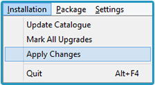
Se tutto è andato a buon fine, una volta terminata la procedura di installazione dei pacchetti, dovremmo avere una schermata simile a questa:
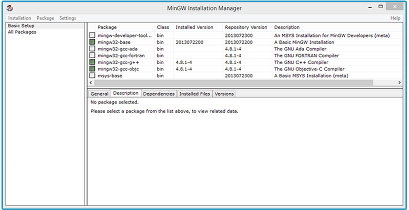
3. Ora bisogna aggiungere il percorso di installazione di MinGW alle variabili d’ambiente di sistema. Anche se sembra difficile, in realtà non lo è. Fate tasto destro su Start -> Computer(per Windows 7), oppure Start -> Risorse del Computer(per Windows XP), oppure su Computer o Questo PC dalla barra laterale sinistra presente in ogni cartella (per Windows 8 e successivi), e cliccate su Proprietà.
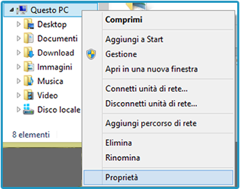
Quindi, a sinistra, scegliete Impostazioni di sistema avanzate e poi cliccate sul pulsante Variabili d’ambiente.
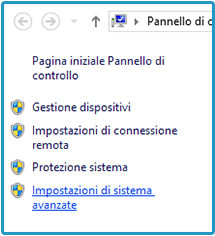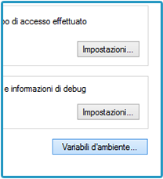
Nella sezione Variabili di sistema, scorrete verso il basso finché non trovate la voce Path. Selezionatela, quindi fate clic su Modifica.
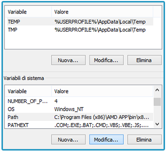
Facendo attenzione a non modificare nessuna delle voci già presenti, scorrete fino in fondo alla riga (verso destra) ed aggiungete:
;C:\MinGW\bin
È importante che copiate anche il punto e virgola, in modo che questa voce sia separata da quella che la precede. Ogni percorso deve essere “isolato”, cioè preceduto e seguito da un punto e virgola.
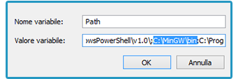
Confermate le modifiche cliccando su Ok per tutte le finestre che sono rimaste aperte.
4. Abbiamo quasi finito: manca la parte più semplice!. Scaricate Eclipse dal sito ufficiale. Questa guida si riferisce alla programmazione in C/C++, quindi bisogna scaricare Eclipse IDE for C/C++ Developers. In base al vostro sistema, scegliete la versione a 32 o 64 bit. Aspettiamo che termini il download e… Ci siamo! Una volta estratto dalla cartella compressa, Eclipse è perfettamente funzionante e pronto all’uso. Scegliete il workspace (cioè la cartella dove verranno salvati i progetti), e buon lavoro!
È un giorno come tutti gli altri. Spegni il computer, vai a dormire, e quando lo riaccendi il giorno dopo ti ritrovi l’icona del Gruppo Home sul desktop senza volerlo.
No, non ci sono i fantasmi. E non è stato nemmeno Albus Silente a farla apparire.
Piuttosto la colpa è di alcuni aggiornamenti rilasciati da Microsoft per Windows 8 e Windows 8.1, che – per ragioni sconosciute – abilitano automaticamente l’icona del Gruppo Home sul desktop. Sfortunatamente non è sufficiente fare “Tasto destro – Elimina” come nella maggior parte dei casi per rimuoverla, e se la trasciniamo nel Cestino non succede niente.
Quindi, ecco il modo più semplice e veloce per sbarazzarsene.
Prima di tutto facciamo tasto destro a vuoto sul desktop, quindi scegliamo Personalizza e selezioniamo l’opzione Cambia icone del dekstop in alto a sinistra.
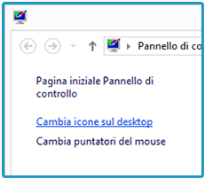
Ora nella scheda Icone del desktop, mettiamo la spunta su Rete, clicchiamo sul pulsante Applica, quindi rimuoviamo la spunta appena messa e selezioniamo Ok per confermare.
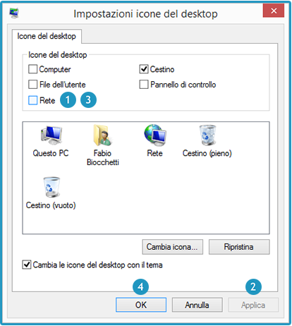
Finalmente l’icona se ne sarà andata. Facile no?
Questo tipo di aggiornamenti potrebbero essere rilasciati più volte in futuro, quindi l’icona abusiva del Gruppo Home potrebbe riapparire, ma basterà seguire nuovamente questi passaggi per rimuoverla.
A presto!
Per saperne di più: Il Gruppo Home permette di condividere documenti, immagini, video e qualsiasi altro tipo di file tra gli utenti connessi – tramite un PC con Windows 7 o superiore – alla Rete domestica. Anche le stampanti e altri dispositivi possono essere condivisi. Inoltre, il Gruppo Home è protetto da password in modo tale da poter decidere cosa condividere con gli altri utenti. I file possono anche essere impostati in modalità solo lettura, così da evitare che chi non è autorizzato possa apportarvi delle modifiche.
Se vuoi attivarlo o vuoi scoprirne il funzionamento in modo più approfondito, puoi consultare la documentazione ufficiale sul sito Microsoft.
Hai effettuato l’aggiornamento a Windows 8.1 sul tuo portatile e hai problemi con la scheda video? Non sei il solo.
I sintomi comuni sono:
Controllo della luminosità non funzionante.
Ventole al massimo anche a computer freddo.
Prestazioni grafiche peggiorate (giochi che vanno a scatti, ecc.)
Errori generici subito dopo l’avvio (L’applicazione ha smesso di funzionare)
Riavvii del PC inattesi e frequenti
Niente panico!
Pur essendo un semplice aggiornamento, Windows 8.1 cambia il modo in cui il sistema operativo gestisce le schede video in determinate situazioni. Fortunatamente ci sono diversi modi per (provare a) risolvere.
* NOTA: Usa questa guida a tuo rischio e pericolo. Declino ogni responsabilità in caso di malfunzionamenti o danneggiamenti hardware o software. *
Innanzi tutto, bisogna disinstallare i driver grafici presenti nel nostro PC già da prima dell’aggiornamento.
Per farlo, apriamo il Pannello di Controllo. Basta andare su Start, quindi digitare direttamente il testo “Pannello di Controllo” ed ecco che questo apparirà tra i risultati di ricerca. Apriamolo e spostiamoci nella sezione Programmi (oppure Programmi e Funzionalità).
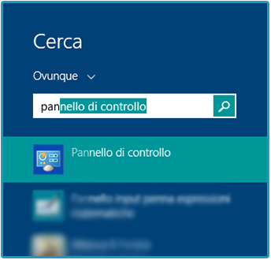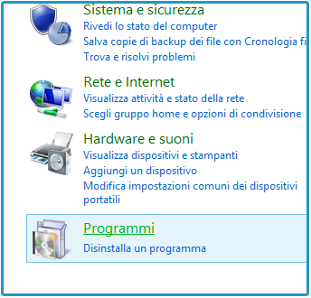
Ora nell’elenco bisogna trovare le voci relative alla vostra scheda video. Se è AMD (o ATI), dovrete cercare AMD Catalyst Install Manager. Se è Nvidia, selezionerete Nvidia Drivers. Dopo aver scelto il driver, basterà cliccare su Cambia o Disinstalla dalla barra in alto.
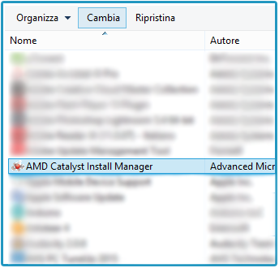
Durante la fase di disinstallazione lo schermo potrebbe lampeggiare o diventare nero, è normale. Al termine, riavviamo il PC. È possibile che la risoluzione video sia più bassa e le icone appaiano più grandi; anche in questo caso, non c’è niente di strano. Tornerà tutto a posto.
Ora bisognerà scaricare e installare i nuovi driver. Rechiamoci sul sito del produttore del nostro PC, quindi troviamo la sezione relativa al Supporto e Driver. Qui di seguito trovate i link alle pagine di supporto delle principali case produttrici:
Trovate il numero seriale del vostro PC (le istruzioni sono direttamente sul sito del produttore), digitatelo nella rispettiva casella, scegliete Windows 8.1 come sistema operativo e scaricate i driver video. Potreste anche trovarli col nome VGA Drivers, o Graphic Drivers.
A questo punto basterà installarli e riavviare il PC per risolvere il problema. Se Windows 8.1 non è presente in elenco, selezionate Windows 8 e provate ad installare questa versione meno aggiornata dei driver. Nel mio caso gli ultimi driver disponibili erano quelli per Windows 8 e hanno funzionato alla perfezione.
Se nessuna delle versioni dei driver è supportata e il problema persiste, abbiamo tre possibilità:
OPZIONE 1
Driver del produttore. Provate a scaricare i driver direttamente dal sito del produttore della scheda video. Questi sono driver generici che potrebbero escludere alcune funzioni, come il controllo della luminosità, ma le prestazoni saranno ottimali ed eviteranno conflitti in quanto aggiornati e compatibili con Windows 8.1. Se hai una scheda video AMD scaricali da qui, invece se hai una Nvidia da qui.
OPZIONE 2
Driver modificati ad hoc. Si possono provare dei driver modificati come questi, ma non è detto che funzionino a dovere e potrebbero compromettere il funzionamento del PC. Leggete attentamente la documentazione ufficiale se desiderate cimentarvi in questa impresa.
OPZIONE 3
Ripristino. Evidentemente il vostro computer non è pienamente compatibile con Windows 8.1. Se la situazione è sostenibile e il sistema resta comunque stabile, non potete far altro che controllare periodicamente che il produttore del vostro PC rilasci dei driver aggiornati. Altrimenti vi consiglio di ripristinare il computer a Windows 8 ed ignorare l’aggiornamento alla versione 8.1.


 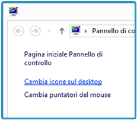
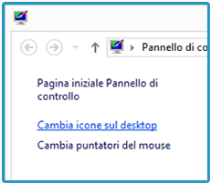